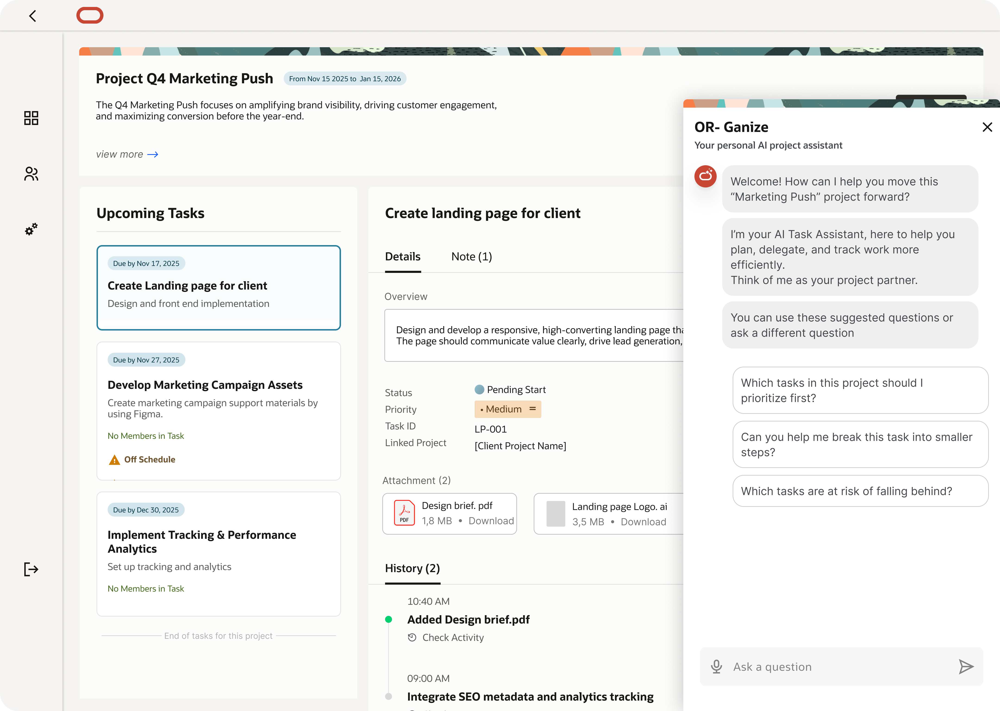
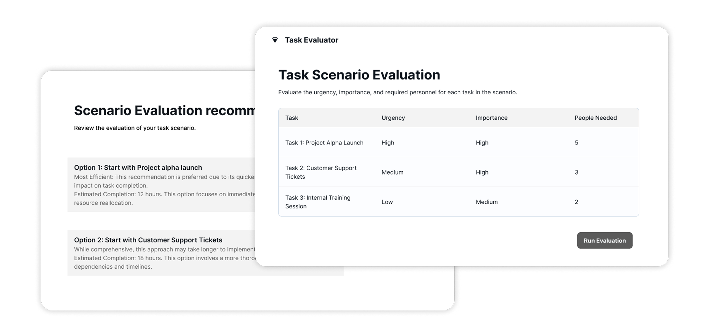
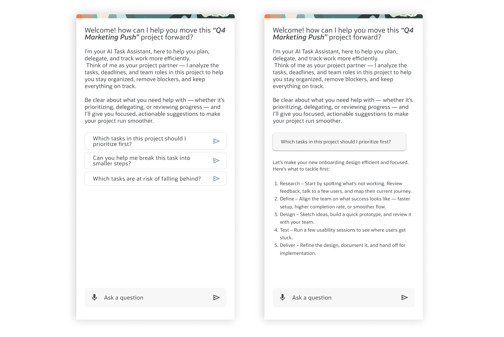
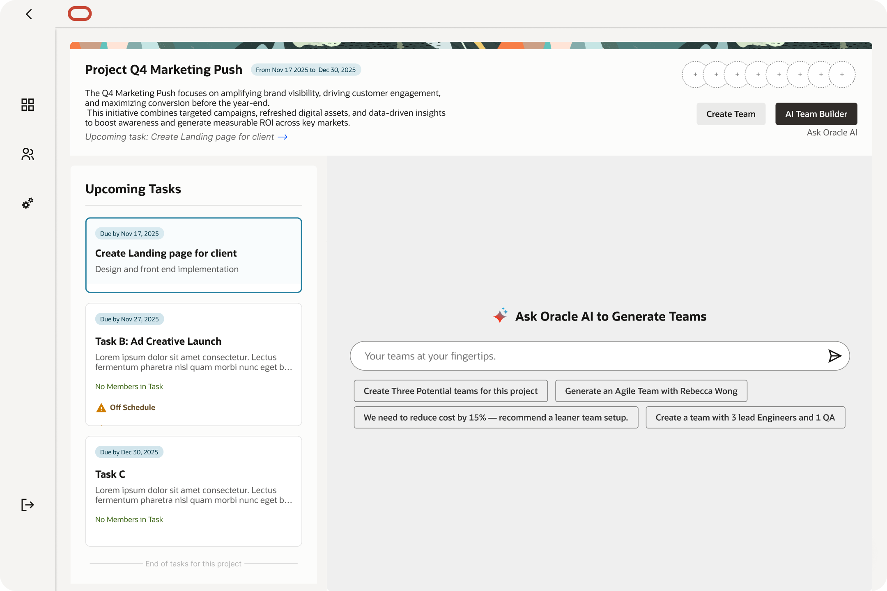
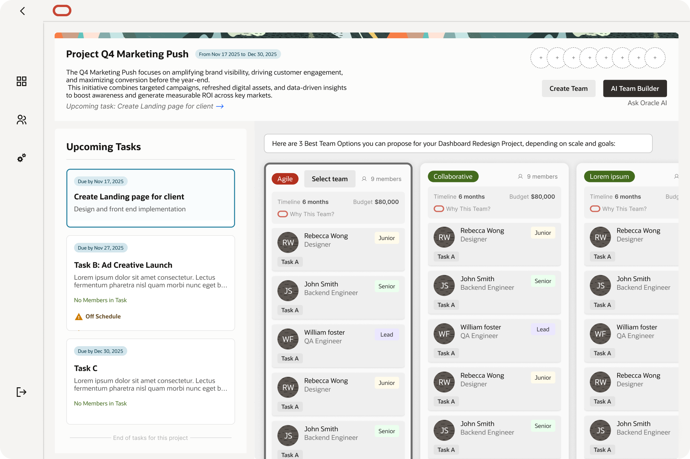
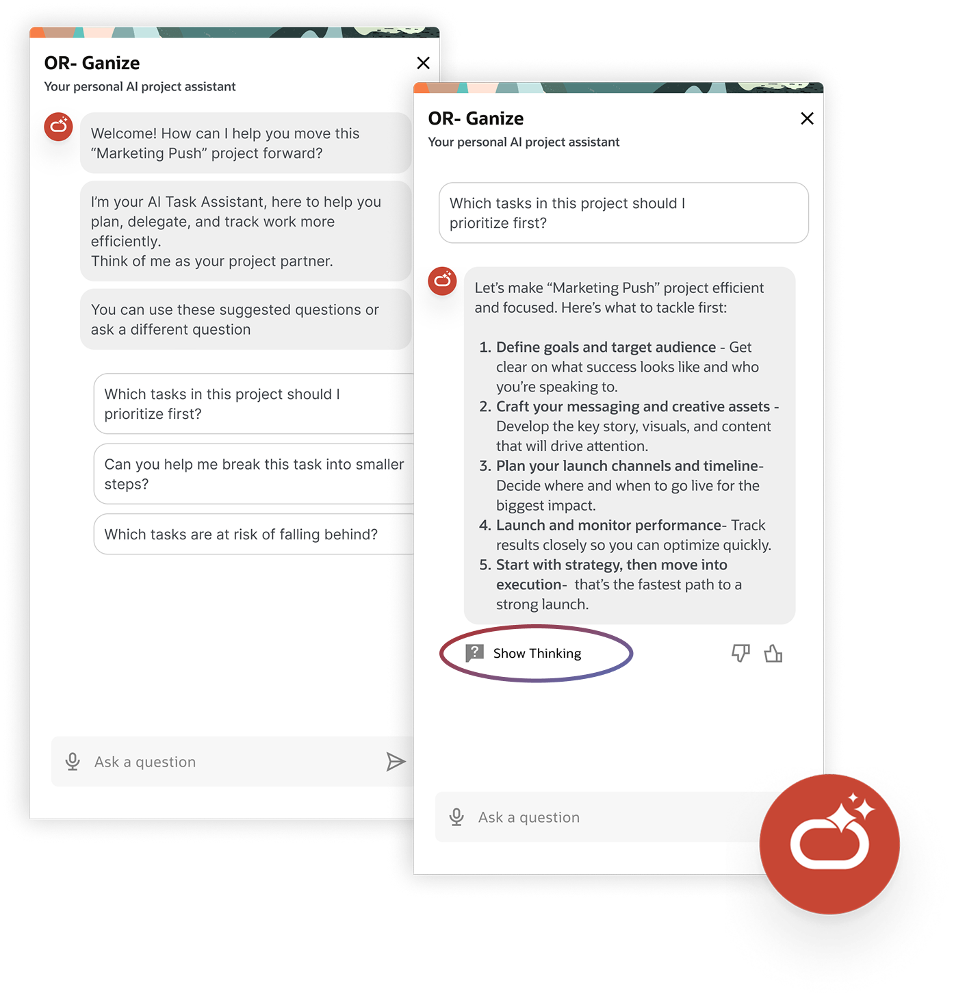
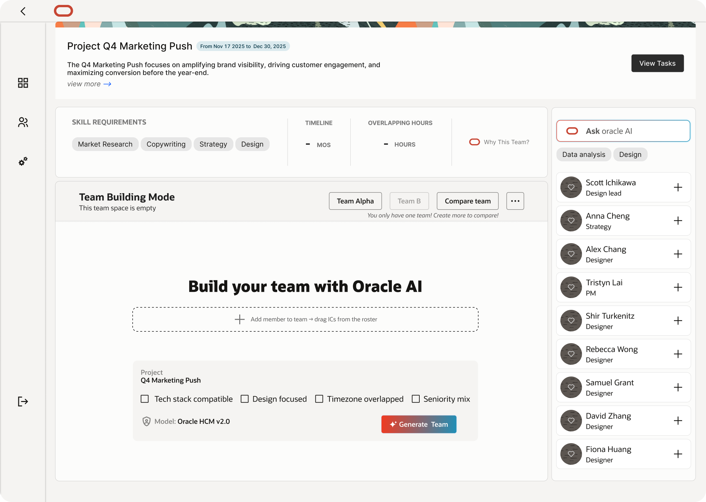
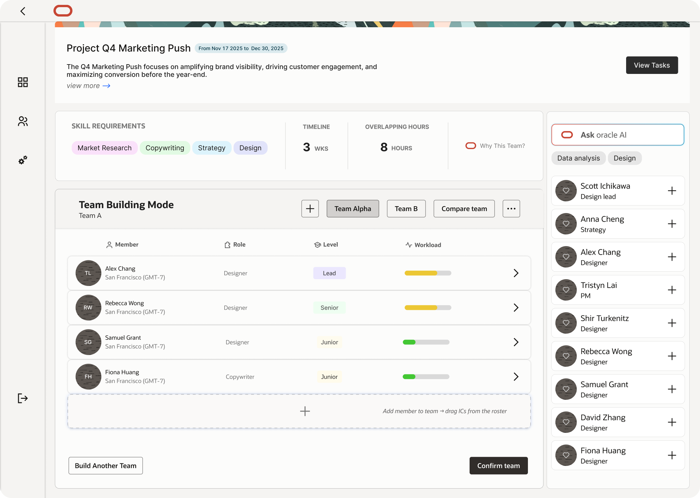
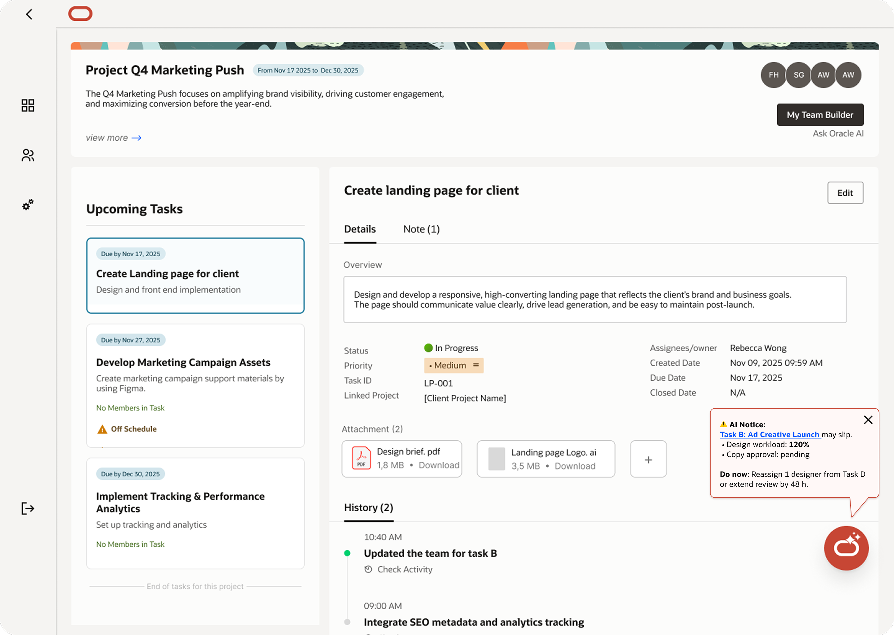
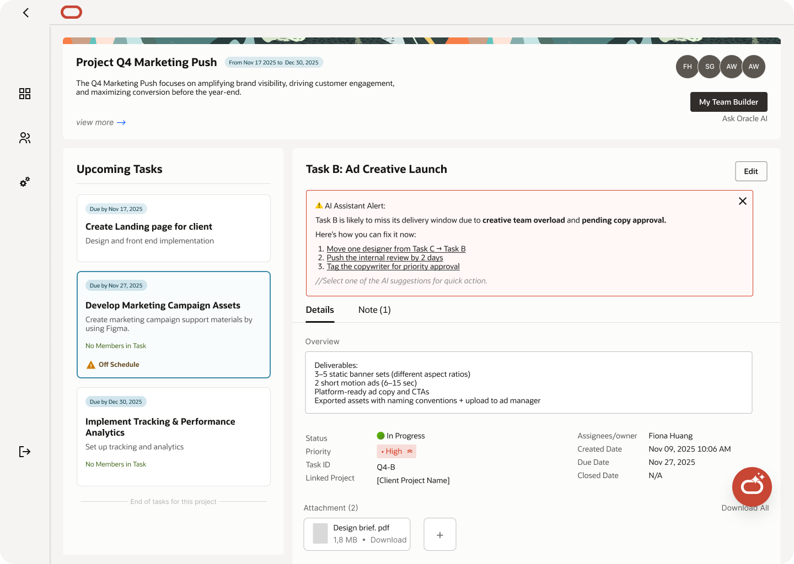

✕
AI-assisted project management tool designed to help managers prioritize work, allocate resources, and identify risks before they escalate.

Managers are overwhelmed by information spread across multiple tools, making it hard to prioritize work, assign teams and tasks, and spot risks early.
What we learned
Initially, after user research, we designed a scenario predictor for tasks - but shifted to an AI agent that managers can ask questions whenever they're unsure about a project.
Our research showed that conversational AI is familiar in the workplace, so this approach matches managers' mental models, reduces the learning curve, and makes the experience feel less overwhelming.


Another key idea was the team builder. We originally designed it as an AI-only experience, but insights from usability testing showed that users wanted the ability to customize and refine the team to better match their needs.


A tool designed to help managers quickly prioritize tasks, build a reliable team, and catch potential hazards before they explode.
Our design solutions leveraged AI - the right tool here because managers weren't lacking data, they were overloaded by it. AI helped pull everything together and highlight what mattered most, while keeping suggestions transparent and editable so managers stayed in control.
An always-on AI assistant that answers project questions, explains risks, and surfaces quick insights via simple chat. By showing how it reaches conclusions and prioritizing actionable signals over noise, it builds trust without adding complexity. Every output is editable - AI is supportive, not in charge.

A hybrid flow that lets managers generate team suggestions with a single click, then adjust as needed. Multiple options, clear signals of what came from AI vs. manual edits, and fully editable outputs keep the manager in control of every decision.


Instead of constant notifications, the system highlights the single most urgent risk and provides clear next steps. It identifies overloaded team members, explains why a task may slip, and offers quick actionable fixes - one signal, not a storm of noise.


Transparency builds trust in AI features - and trust leads to more usage.
Managers prefer AI as a co-pilot - they want to stay in control, not be replaced.
Fewer, clearer signals drive better engagement than constant low-priority alerts.
This project strengthened my ability to design complex AI-driven systems while keeping human needs, trust, and usability at the center.
Sound on for the full experience.